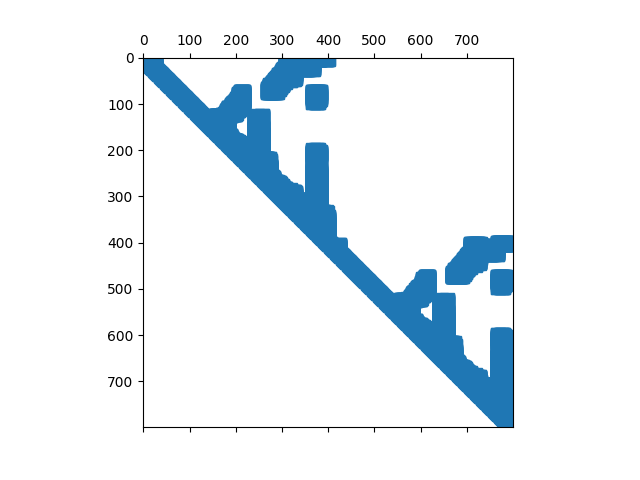

Graduate Coursework · CMU 16-833
Graduate Coursework · CMU 16-833
SLAM mini projects.
Four mini projects from Robot Localization and Mapping, taught by Prof. Michael Kaess. Together they walk the same problem through four different formulations, from sampling to Gaussians to sparse linear algebra to dense geometry.

Mini project 1
Robot localization with particle filters
Global localization for a lost indoor robot in Wean Hall using only odometry and a
laser rangefinder against a known map. Monte Carlo localization with an odometry
motion model, a beam sensor model, Bresenham ray casting and low-variance
resampling, validated across three robot datasets.

Mini project 2
SLAM using an extended Kalman filter
Estimating the robot trajectory and six landmark positions simultaneously from
range-and-bearing measurements, with an explicit covariance on every one, plus a
systematic study of how each noise parameter reshapes the uncertainty ellipses.

Mini project 3
Linear and nonlinear SLAM solvers
SLAM as one large sparse least-squares problem instead of a filter. Benchmarking LU
against QR with and without COLAMD reordering, reading the answer off the sparsity
of the information matrix, then extending to the nonlinear case.

Mini project 4
Dense SLAM with point-based fusion
A full dense RGB-D SLAM system: point-to-plane ICP with projective data association
for tracking, point-based fusion into a surfel map at under 9% of the raw point
count, then tracking against that map instead of ground truth.